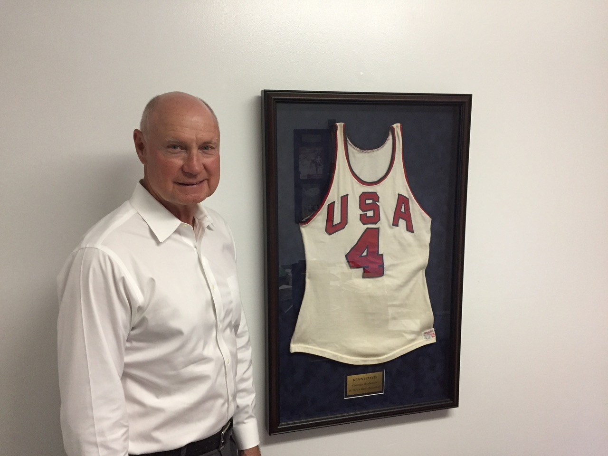

Two years ago, team captain Kenny Davis reached out to a company and sketched what should be on the new gold medal. The back side contains the U.S.A. logo that adorned the players’ clothes. Etched on the front side is the player’s name and number, along with the names of every teammate. There is also the score: USA 50, USSR 49. That was the tally before international basketball czar R. William Jones — who had no authority to do so — put three seconds back on the clock twice. On their third possession, after a Bulgarian referee motioned to U.S. player Tom McMillen that he couldn’t defend the inbound passer, when the rules noted he could, the Soviets scored an improbable basket after a court-length heave. Jones put no more time on the clock. In the midst of the Cold War, the United States lost its first Olympic basketball game in 63 tries — ending a streak that began when the sport was introduced during the Games in Berlin in 1936.
Why create the medals now? “I was thinking there was nothing to leave behind for our families,” said Davis, a septuagenarian who along with all his teammates have refused to accept the silver medals for 54 years. “It’s a keepsake.”
Whereas the gold medals in Munich were made primarily of silver with plated gold mixed in and weighed about six ounces, these medals were created with eight ounces of solid gold, meaning they are worth about $35,000 each, depending on daily price fluctuations in the troy ounce. “What it says on the medals is important,” Davis said. “But I also wanted them to have value.” In a somewhat ironic note, they ended up being crafted in Germany; the seven silver medals known to exist from the rejected U.S. stash are also in Europe at the International Olympic Committee headquarters in Switzerland.
As noted in my book Three Seconds in Munich, two players, Davis and Tom Henderson, noted in their wills that none of their descendants can procure the silver medal. Henderson explained, “I’ve been telling my kids for years we’re not accepting that. It wasn’t right. Being cheated on worldwide TV didn’t sit right. Don’t tell us we didn’t win.”
Because of the amateur rules in place then, the U.S. players could not compete in subsequent Olympics after they turned pro, which 11 of them did. Today, pros are allowed to compete in the Games, and players can win multiple medals.
One player who was injured during the last day of training camp in 1972, John Brown, also received the newly created gold medal. He was devastated he couldn’t go to Munich. “We always felt John Brown should have been on the team,” said Davis (Brown’s name is among those who ring the new medal, meaning 13 players rather than 12 are highlighted). “He’s as one of us as any of them.”
A while back, a Soviet basketball player put his 1972 gold medal up for auction. At the time, Davis said he would not bid on it, and he doubted any of his teammates would. The gold medal never moved from its $25,000 minimum bid.
But now, U.S. players finally have gold. Said Davis, “When you see it in person, it’s really incredible.”
